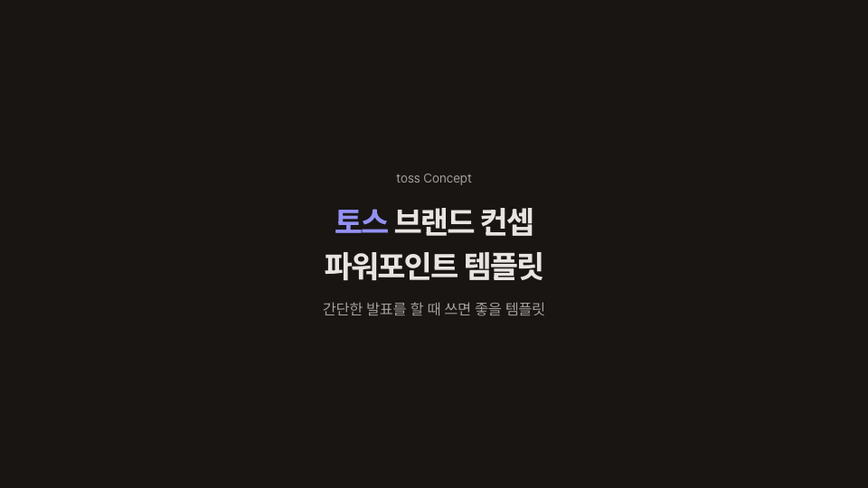
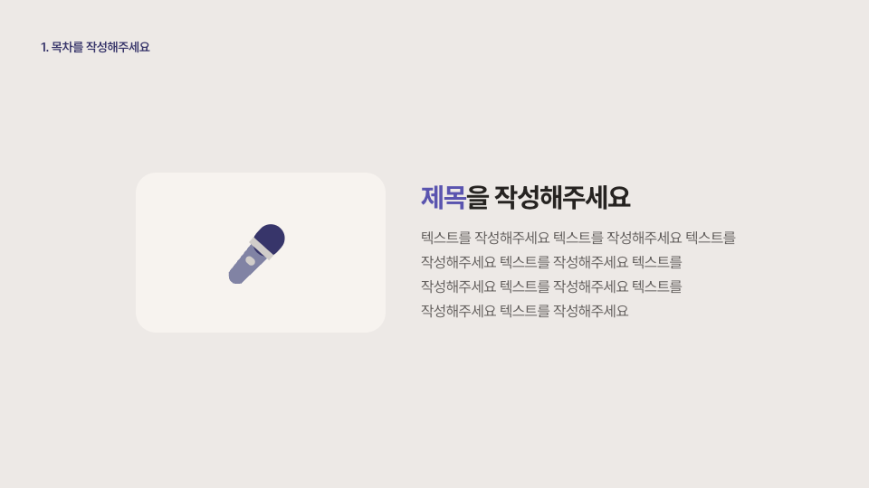
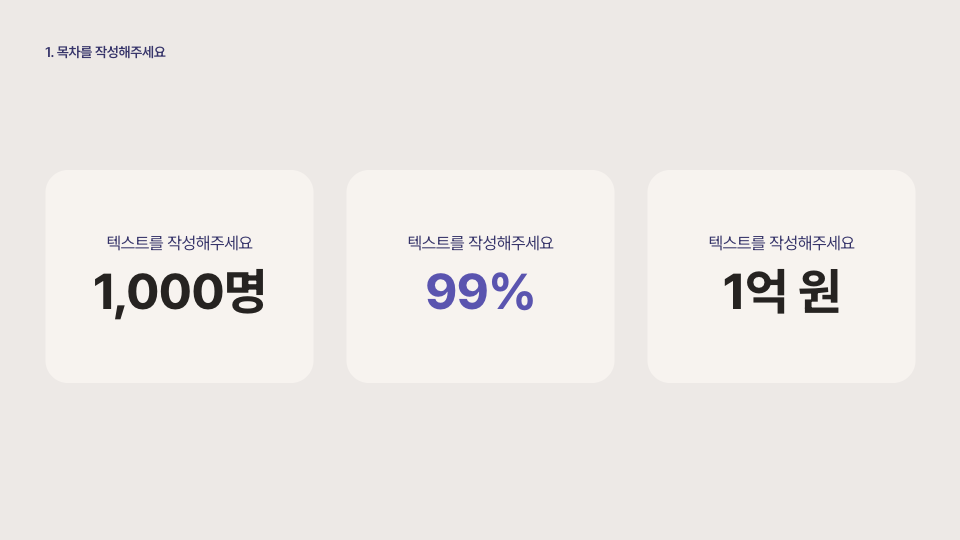
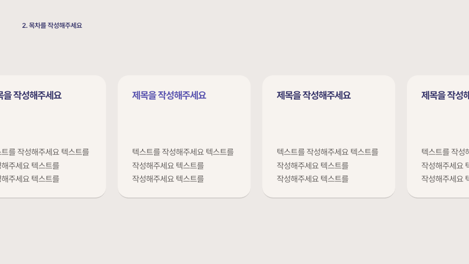
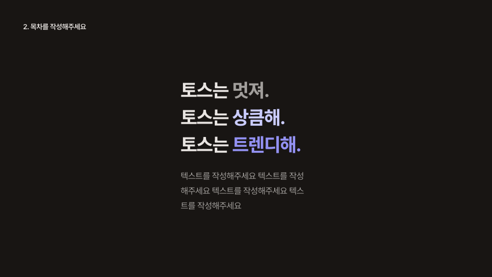
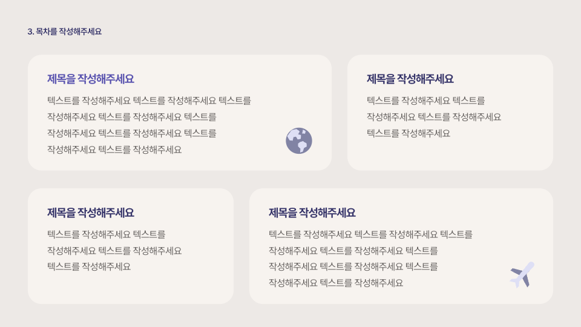
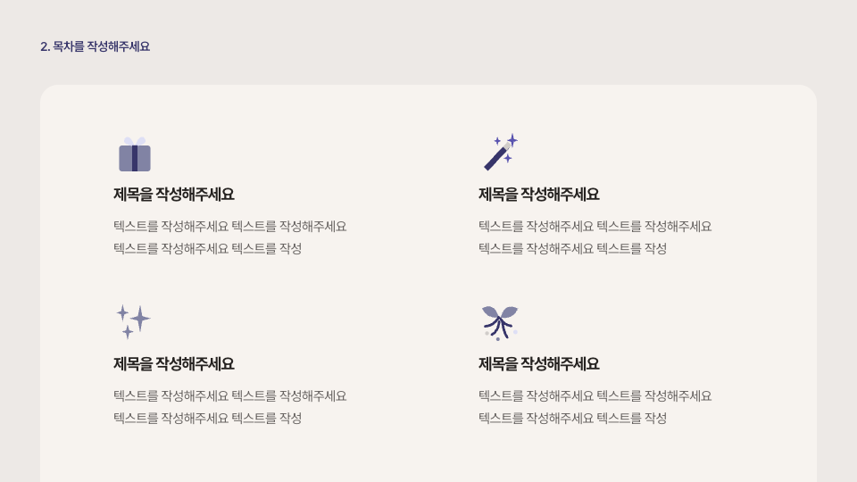
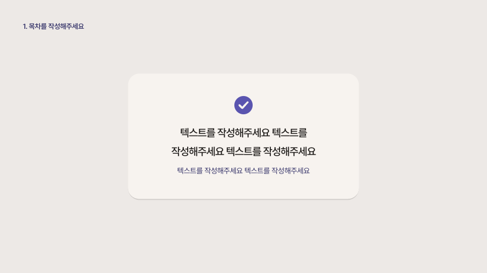
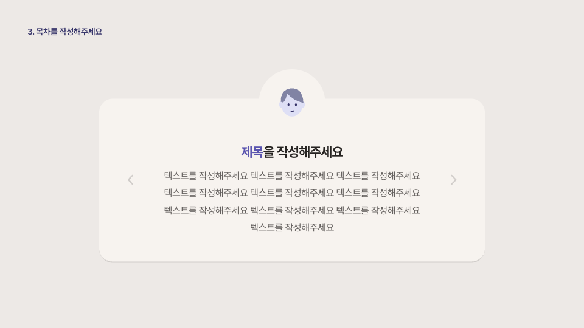

토스 브랜드 컨셉 · 표지
짙은 배경 중앙의 영문 캡션과 두 줄 제목, 한 줄 부제 · 짙은 배경 중앙의 영문 캡션과 두 줄 제목, 한 줄 부제

마이크와 소개 문장
좌측 둥근 마이크 패널과 우측 제목·네 줄 소개 문장 · 좌측 둥근 마이크 패널과 우측 제목·네 줄 소개 문장
· 화면 출처 ↗
세 가지 핵심 숫자
같은 크기의 가로 카드 세 개에 설명과 1,000명·99%·1억 원 · 같은 크기의 가로 카드 세 개에 설명과 1,000명·99%·1억 원
· 화면 출처 ↗
가로 카드 캐러셀
네 개의 가로 카드 중 양 끝 카드가 화면 경계에서 잘리는 연속형 구성 · 네 개의 가로 카드 중 양 끝 카드가 화면 경계에서 잘리는 연속형 구성
· 화면 출처 ↗
토스는 멋져 · 브랜드 메시지
짙은 배경 중앙에서 왼쪽 정렬한 세 줄 메시지와 하단 세 줄 본문 · 짙은 배경 중앙에서 왼쪽 정렬한 세 줄 메시지와 하단 세 줄 본문
· 화면 출처 ↗
넓고 좁은 네 개의 설명 카드
2×2 격자에서 넓은 카드와 좁은 카드를 교차 배치하고 지구·비행기 도형을 추가 · 2×2 격자에서 넓은 카드와 좁은 카드를 교차 배치하고 지구·비행기 도형을 추가
· 화면 출처 ↗
아이콘 설명 네 개
하단까지 이어지는 넓은 단일 패널 안의 2×2 아이콘·제목·설명 구성 · 하단까지 이어지는 넓은 단일 패널 안의 2×2 아이콘·제목·설명 구성
· 화면 출처 ↗
체크 표시와 핵심 문장
중앙 둥근 카드의 체크 아이콘, 두 줄 핵심 문장과 하단 강조 문장 · 중앙 둥근 카드의 체크 아이콘, 두 줄 핵심 문장과 하단 강조 문장
· 화면 출처 ↗
인물 후기와 양쪽 화살표
넓은 중앙 카드의 상단에 돌출된 원형 인물 아이콘, 중앙 제목·본문과 양쪽 화살표 · 넓은 중앙 카드의 상단에 돌출된 원형 인물 아이콘, 중앙 제목·본문과 양쪽 화살표
· 화면 출처 ↗